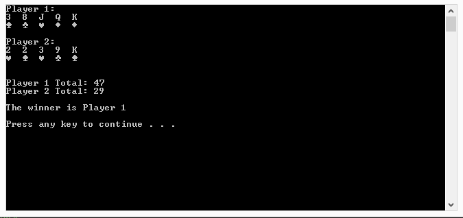
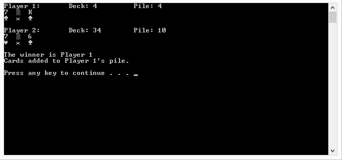
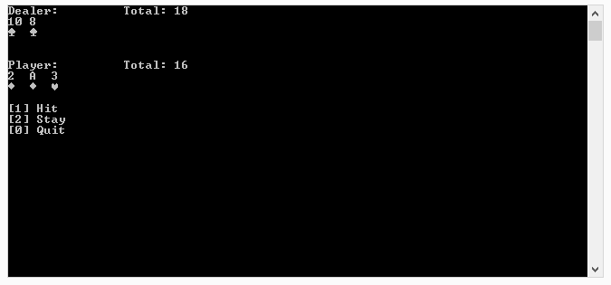

Best Hand
The game is simple, both you and the computer will be dealt a hand of 5 cards.
The value of the cards in each hand will be added up and the hand with the higher
value will be the winner.

War
In war the deck is shuffled and split in 2 between the player and the computer.
Both player and computer then put down the card on the top of their deck and which
ever player had the higher card value takes both cards and shuffles them back into
their hand. If the cards placed down have the same value both player place down one
face down card and then one more set of cards to compare and continue this until one
of the cards has a higher value then the other.
The game ends when someone has no more cards in their hand, and the winner will be the
player with all the deck in their hand.

Black Jack
A standard game of black jack where you as the player need to get closer to the value of
21 without going over then the computer does as the dealer. The computer follows the standard
rules a dealer is suppose to follow during a game where the player has the option to hit or
stay.
